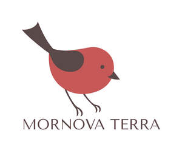

Trade Mark Journal No.2025/035 29 August 2025
UK00004204352 15 May 2025 (7,9,11,21,35)

- Class 7
- Food processor; Electric Griddle; Electric Meat Grinder; Electric Hot Pot; Vegetable cutter machine; Pet Monitoring Camera; Robotic cleaning [vacuuming]; vacuum cleaner; smart lawn mower; Vertical Packaging Machine; Heat Shrink Packaging Machine; Industrial equipment including Retrieval Robots, conveyer belt; lifting platform.
- Class 9
- Measuring Cup; Bluetooth Earbuds, Smartwatch, Health Tracker, Item Locator, Pet Tracker.
- Class 11
- Smart Slow Cooker; Smart Air fryer; Smart Electric Kettle; Electric Kettle; Pet equipment including automatic feeder, automatic water dispenser, automatic toilets; desktop fan, portable mini fan, USB mini fan.
- Class 21
- Tableware including Dinnerware Bowl, Dinnerware Plate, Plates, Dinnerware Cup, Cutting Board, , Teapot, Wine Glass, Food storage containers including stretch lid storage container and silicone food storage containers. Cooking utensils; pet food bowl; pet outdoor bowl; disposable soft facial towel; compostable plate; storage boxset; kitchen storage rack; make up brush. Make up sponges.
- Class 35
- Online and offline advertising planning services; brand creation agency services; market research services; import and export agency; business management services. Wholesale and Online and offline retail in relation to Food processors, Electric Griddles, Electric Meat Grinders, Electric Hot Pots, Vegetable cutter machines, Pet Monitoring Cameras, Robotic cleaning [vacuuming], vacuum cleaners; smart lawn mowers, Vertical Packaging Machines, Heat Shrink Packaging Machines, Measuring Cups; Bluetooth Earbuds, Smartwatch, Health Trackers, Item Locators, Pet Trackers, Smart Slow Cookers; Smart Air fryer; Smart Electric Kettles; Electric Kettles; Pet equipment including automatic feeders, automatic water dispensers, automatic toilets; desktop fans, portable mini fans, USB mini fans, Tableware including Dinnerware Bowls, Dinnerware Plates, Plates, Dinnerware Cups, Cutting Boards, Teapots, Wine Glasses, Food storage containers including stretch lid storage container and silicone food storage containers, Cooking utensils, petfood bowls, pet outdoor bowls, disposable soft facial towels, compostable plates, storage box sets, kitchen storage racks, makeup brushes and Make up sponges.
Mornova terra Ltd.